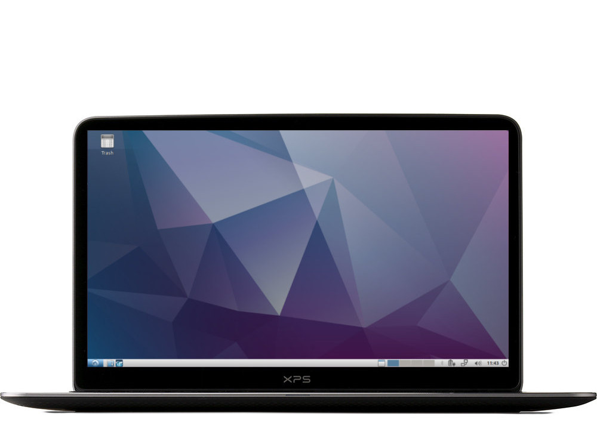

Lubuntu is a fast and lightweight operating system with a clean and
easy-to-use user interface.
It is a Linux system, that uses the minimal desktop LXDE/LXQT, and a
selection of light applications. Because of this, Lubuntu has very low hardware requirements.
Download lubuntu (Intel x86)
Download lubuntu (64-bit AMD64)
Download lubuntu (Raspberry)



Lubuntu was founded by Mario Behling and has been grown for many years by
Julien Lavergne. Please join us and install Lubuntu on your computer.